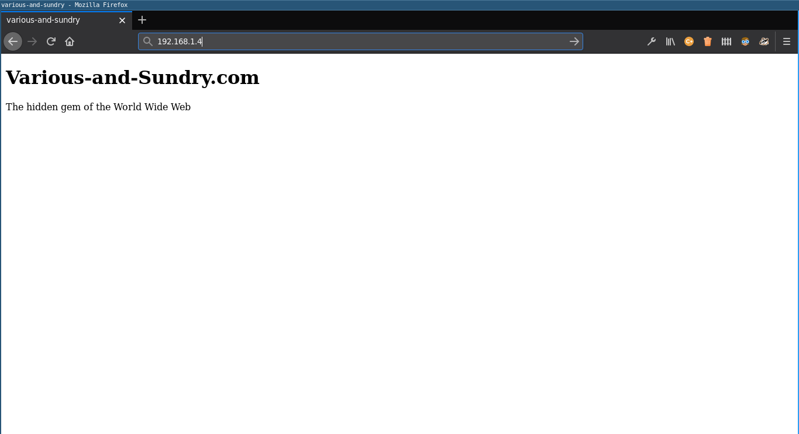

Installing Apache on the Raspberry Pi Server
The Apache Web Server is an secure and open-source HTTP server, which works well on the Raspberry Pi. According to its website, it was launched in 1995 and has been the world's most popular web server since April 1996. In this article, we will install Apache2, allowing the Raspberry Pi to serve web pages.
Installing Apache2
Installing Apache within Raspberry Pi OS can be done directly via apt-get as shown below.
pi@raspberrypi:~$ sudo apt-get update
Get:1 http://raspbian.raspberrypi.org/raspbian buster InRelease [15.0 kB]Get:2 http://archive.raspberrypi.org/debian buster InRelease [32.6 kB]Get:3 http://raspbian.raspberrypi.org/raspbian buster/main armhf Packages [13.0 MB]Get:4 http://archive.raspberrypi.org/debian buster/main armhf Packages [351 kB]Fetched 13.4 MB in 35s (386 kB/s)Reading package lists... Donepi@raspberrypi:~$ sudo apt-get install apache2
Reading package lists... DoneBuilding dependency tree Reading state information... Doneapache2 is already the newest version (2.4.38-3+deb10u4).0 upgraded, 0 newly installed, 0 to remove and 52 not upgraded.The install package should be nice to us by setting up the ports and assigning Apache to start on boot. In other words, it should all work automatically.
Testing
To test that it is functioning properly, Apache includes a default web page, which should be accessible to any computer on the same network as the Pi.
Open the web browser of any computer on the network (probably the one that you are using to control the Raspberry Pi) and type http:// and then the IP address of the Pi into the address bar. Then press enter, and a web page like the one below should appear.
If the web browser says that the web page does not exist, then you probably typed the address in incorrectly. Check that the IP address matches the IP address of YOUR Raspberry Pi and remember, you most use http not https—we have not added encryption yet. If you are sure that you typed the address in correctly but still do not see the web page, then you still probably typed it in incorrectly. If you check it another five times and still believe that it is correct, then you are permitted to consider the possibility of there being a problem with the Apache Web Server configuration.
Modifying the Web Page
Of course we can replace or modify the default web page seen above. The default web page is stored in /var/www/html/index.html. We can create a whole website within the /var/www/html/ directory, and index.html will be the default landing page.
Navigate to /var/www/html/ and delete the default index.html file (or you could rename or move it if you prefer).
pi@raspberrypi:~$ cd /var/www/html
pi@raspberrypi:~$ rm index.html
Now we can write a new index.html. I will install and use vim, but any editor should work (nano is installed by default or you could install Emacs).
pi@raspberrypi:~$ sudo apt-get install vim
Reading package lists... DoneAfter this operation, 32.6 MB of additional disk space will be used.Do you want to continue? [Y/n] ypi@raspberrypi:~$ vim index.html
Then an HTML page can be written. Here is an example (please pardon the lack of syntax highlighting).
<!doctype html><head> <title>various-and-sundry</title></head> <body> <h1>Various-and_Sundry.com</h1> <p>The hidden gem of the Web.</p></body>Once the file is saved, Apache will serve it as the default web page. Refresh your web browser, and you should see a page similar to the one below.
In the next article, we will try to transfer files directly to the Raspberry Pi over the network. I have never done that before, so I do not know how it will be done. Tune in next time to find out.
| Previous | Published January 13, 2021 | Next |
|---|